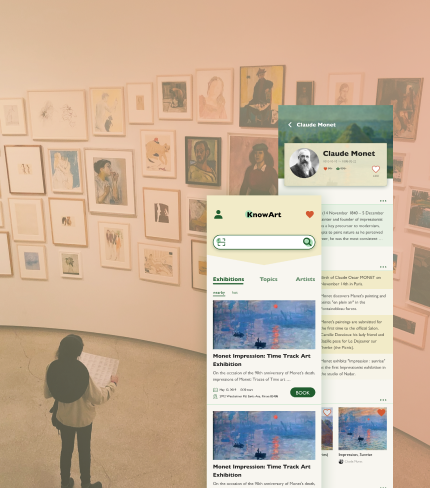

01
Nutrition Design
An app that helps users record their diet, recommend appropriate food and recipes according to their physical conditions, and help users provide reasonable diet for their families.
02
Recipe Web
Recipe website hopes to provide users with a recipe tutorial platform that makes it easy to learn and estimate the duration and difficulty of cooking, as well as a community where users can communicate and learn from each other.
03
Art App
An app that provides users with more information about art works and artists, as well as relevant art introduction knowledge, so as to help users improve their interest in art and learn more about art and artists.